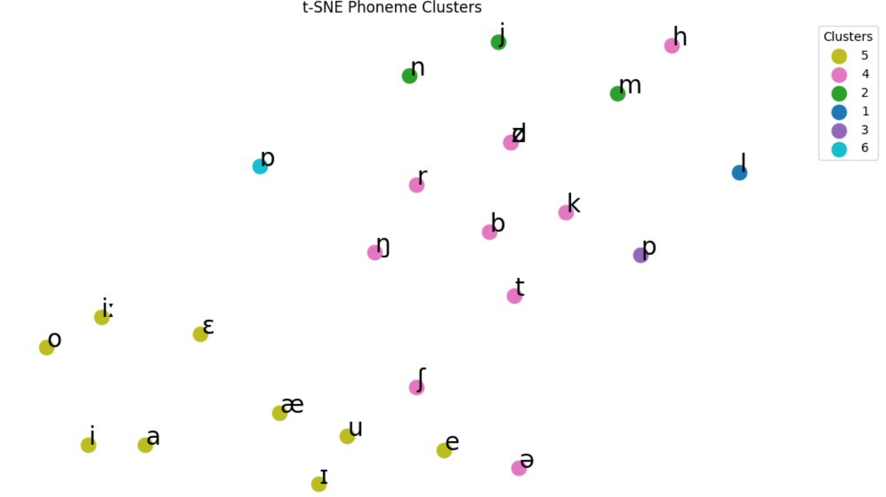

This was a small independent research project I presented at Emory Undergraduate Linguistics Conference 6
Process
The idea for this project started with a question I asked during a presentation from computational linguist Eleanor Chodroff. While presenting her research on cross-linguistic phonetic analysis, a crucial part of the process involved orthographic transcription. I was curious on how this process worked for unwritten languages. Last summer, I was interested in modeling the fictional language from the Minions, which is an unwritten nonsense language. I was inspired by all of this to do speech processing of nonsensical language to create a pipeline that could allow for phonetic analysis on low resource language from distribution alone, seperate from meaning and transcription.
Data
I gathered some short clips from various Minions media, then I did a phone level transcription of a small training set. e.g
b a t a b u m
"mam2": {
"minionese": "m a k u",
"standard": "a ʔ t͡ɕ ɨ s̪"
},
Analysis
To make meaning of the data, I used an approach by
Connor Mayer
. In short, the approach required representing the phonology space as a co-occurance matrix where each column
is a sound and every dimension is a new context where the sound occurs. Instead of using just raw counts, the columns
in the matrix were normalized according using positive pointwise mutual information, which essentially weights the vectors
by asking the question
"do these sounds co-occur more than if they were isolated?"
.
Afterwords, I used principal component analysis alongside k-means clustering to extract sounds that constitute a discovered class.
The idea was that this technique from audio alone could allow for analysis of phonetic structure without the need for a standard written script.
There are many limitations to this approach for applying it to natrual language. The first being that Minionese, while being nonsensical, still takes
heavy inspiration and loans a lot of words from the most popular spoken languages in the world. Low resource languages may have uncommon features compared
to those that make up minionese.

Regardless, the results were satisfactory. From nonsensical audio input, the algorithm was able to recover the natrual disticntion of
conosonats and vowels as well as hint at other structre among sounds in Minionese, much like the small toy language examined by Mayer.